Black women are four times more likely to die during childbirth than white women.
Selected work / Final-year capstone
VIM: Voices in Maternity
A storytelling platform to make Black maternal health safer, more human, and more heard.
I focused on Black maternal health, with an approach that could support all women of color navigating racial and ethnic inequities during pregnancy.
A dual-sided platform and physical installation that centers storytelling as a tool for change.

01 · The purpose
The Project Aim
- Identify gaps within prenatal care and risk assessment that may relate to negative experiences Black pregnant women face during pregnancy.
- Offer recommendations for healthcare professionals to use a racially and culturally patient-centered approach to prenatal care, improving experiences for Black pregnant women.
02 · The challenge
The Problem
Black women in the UK are significantly more at risk during pregnancy and childbirth, not only due to clinical issues but because of systemic neglect, bias, and silencing in medical environments.
Many report feeling unheard or dismissed by healthcare professionals.
Hospital systems lack spaces for emotional expression or cultural understanding.
Patients often carry the burden of educating their care providers.
There is no safe, structured way for healthcare professionals to hear, reflect, or change.
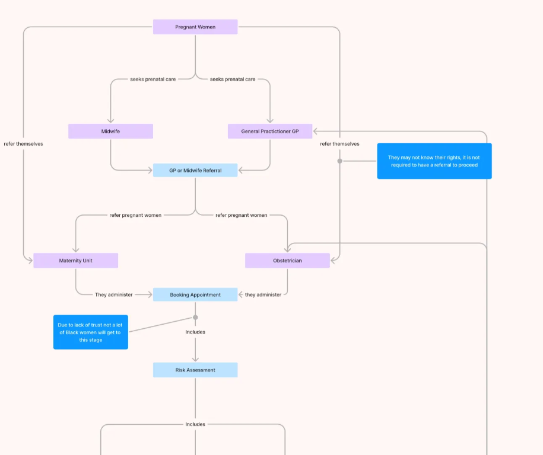
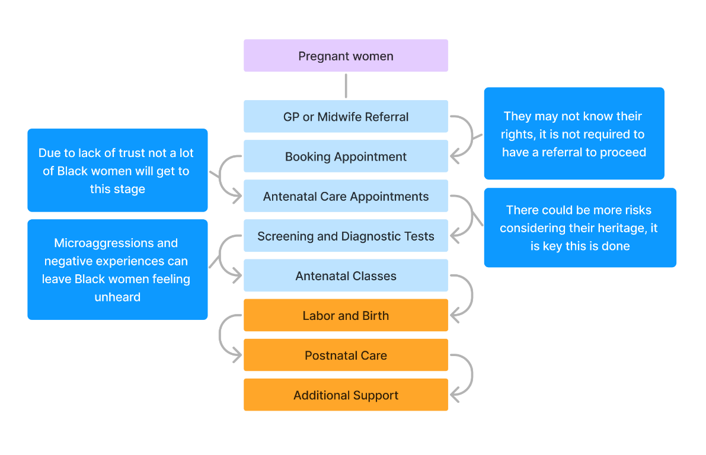
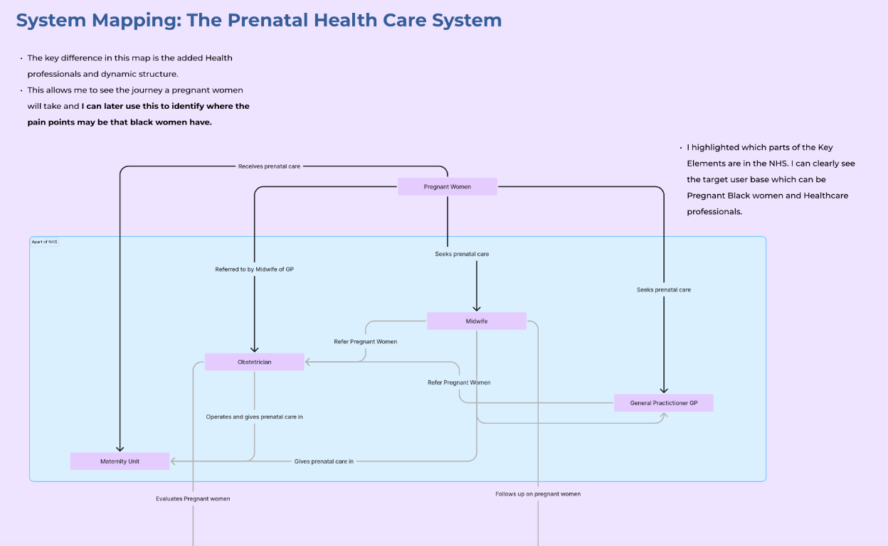
03 · The design goal
Design a platform that…
- Amplifies Black maternal voices through storytelling
- Provides a safe, consent-first way to share experiences
- Encourages healthcare professionals to listen, not defend
- Bridges the emotional and cultural gap in clinical spaces
- Builds trust between care systems and Black communities
04 · Discovery
Research Approaches
I used five key research methods:
Self Ethnography
Personal reflection on biases, assumptions, and personal experience with healthcare.
Desk Research
Secondary research and literature review.
Participant Approach
Expert interviews and surveys / questionnaires.
Non-Participant Approach
Observational study, including hospital visits.
Co-Creative Workshops
Creative personas, journey mapping, and user testing.
Desk research themes
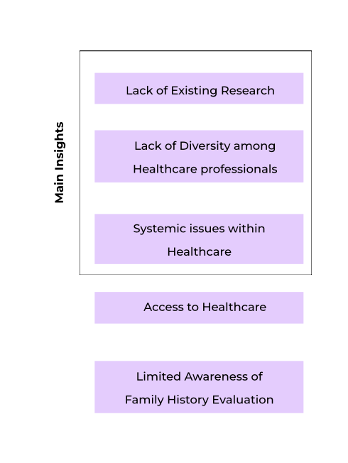
Survey and questionnaire results
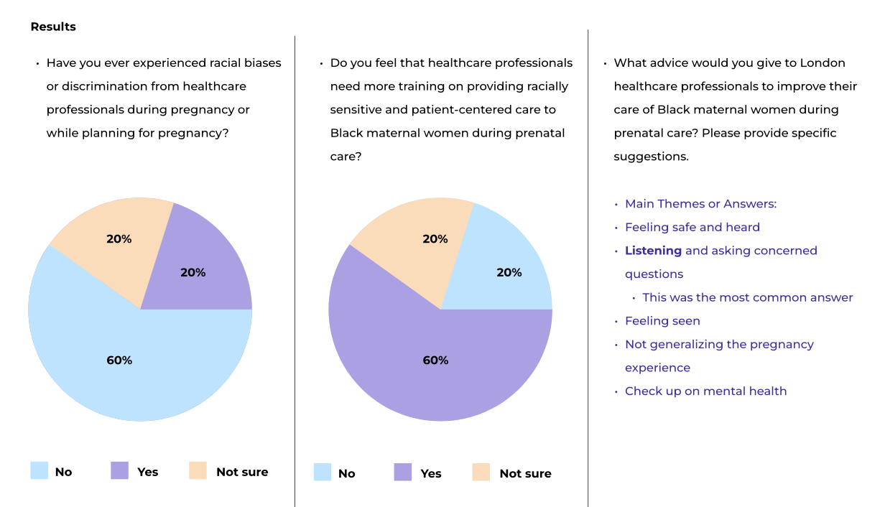
Personas & user journeys
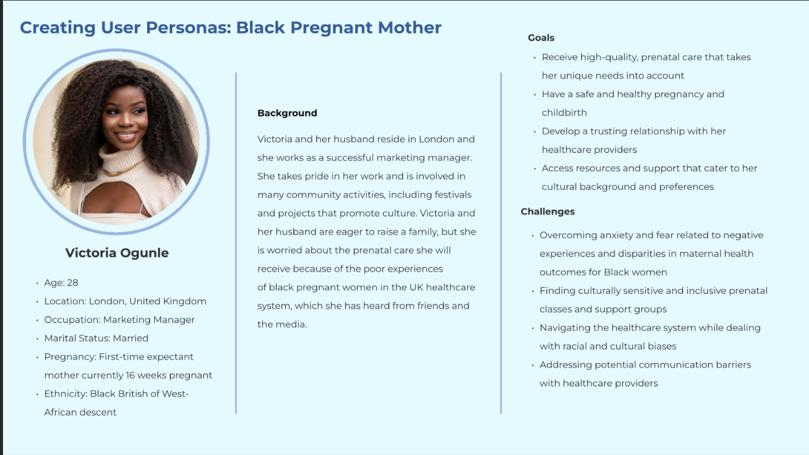
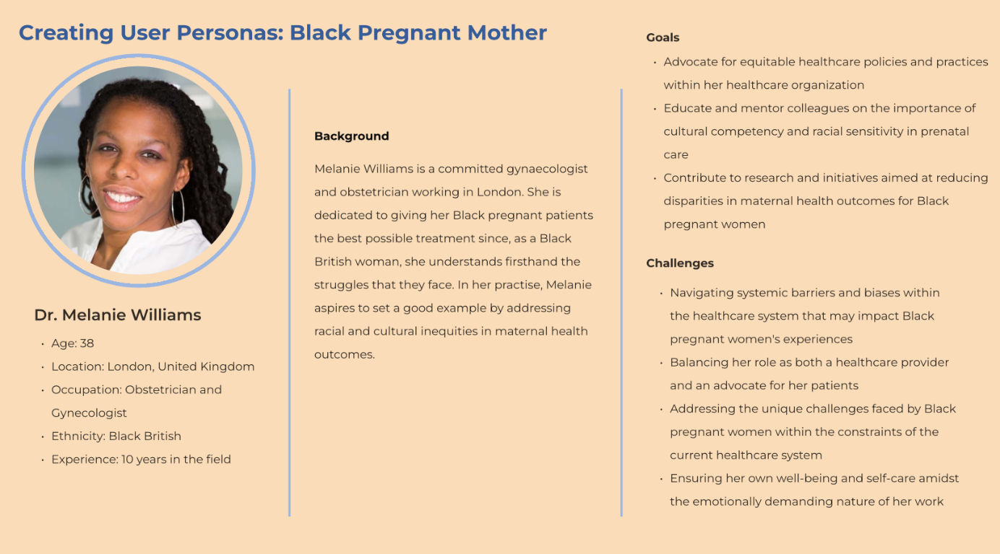
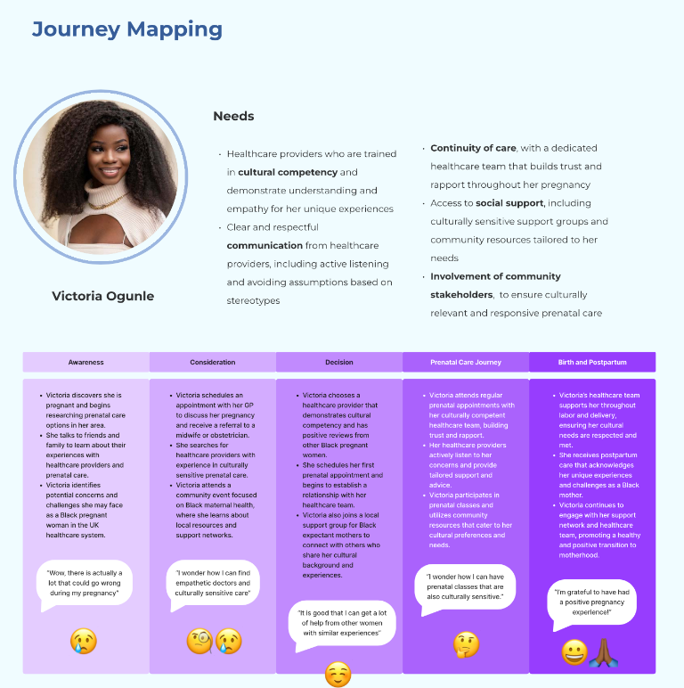
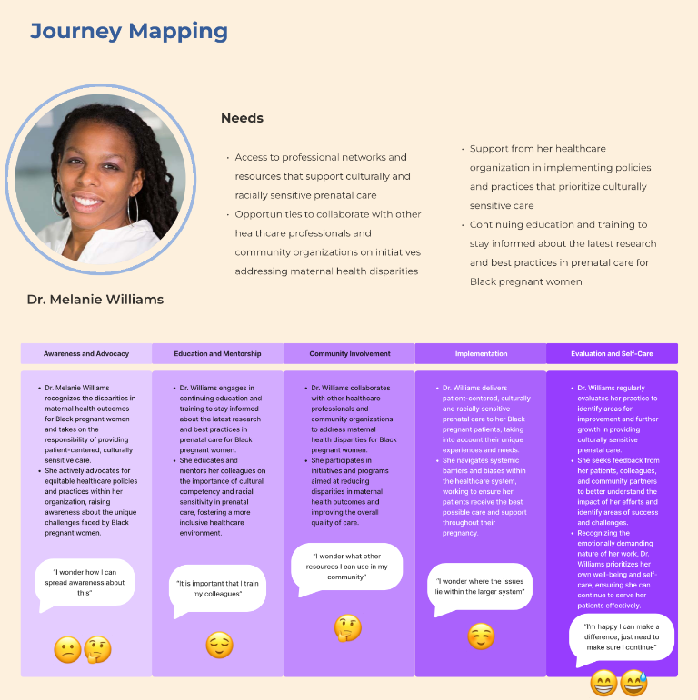
05 · The concept
VIM: Voices in Maternity
A dual-sided platform and physical installation that centers storytelling as a tool for change.
Patient stories
Patients share stories in audio, video, or written formats.
Professional reflection
Professionals access anonymized experiences for learning and self-reflection.
Consent and context
Each story is framed with user-controlled consent, visibility, and context.
Emotional safety
The experience focuses on emotional safety, not data extraction.
Digital platform
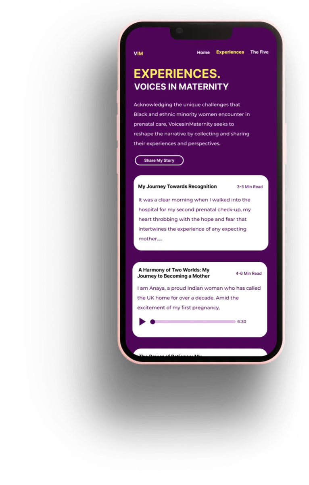
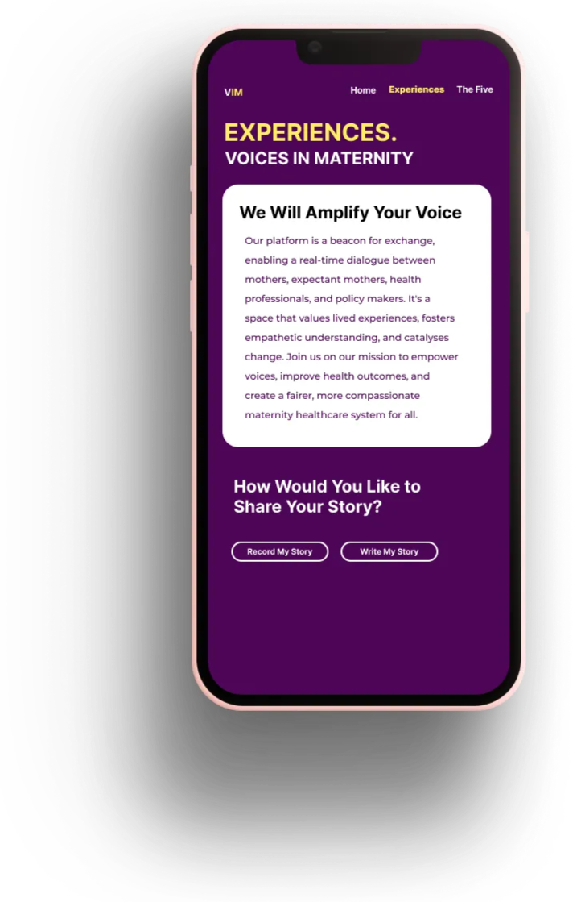
Physical integration
A concept for in-hospital storytelling booths: a quiet, human space to engage with patient experiences in real time.
User flows for the concept
What is the structure of the product?
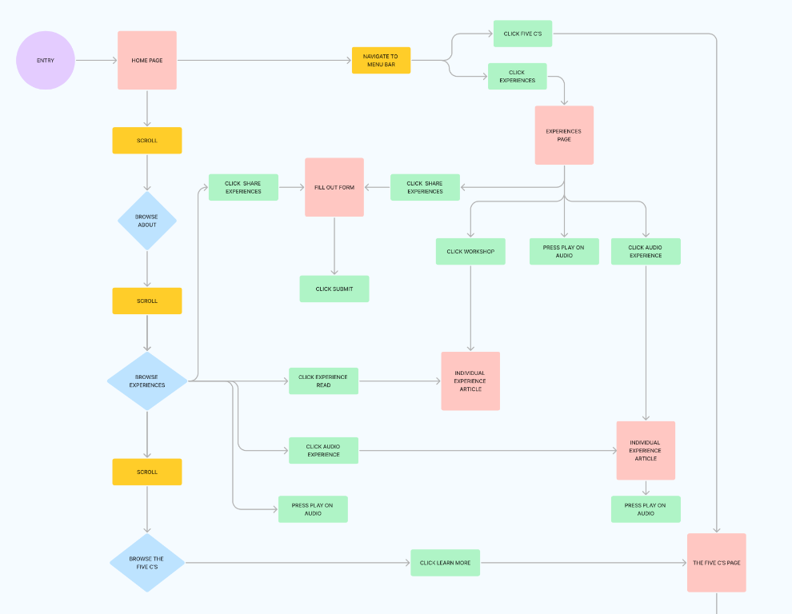
06 · A reflection framework
The Five C’s for Healthcare Professionals
To guide learning and behavioral change, I created a reflection model for clinicians that’s embedded within the platform experience.
Cultural Competency
A lifelong commitment to understanding cultural differences and responding with empathy.
Communication
Active listening and respectful, culturally sensitive dialogue.
Continuity of Care
Consistent, safe, and affirming care throughout the maternal journey.
Communal Support
Recognizing and honoring the cultural, spiritual, and familial structures Black women lean on.
Community Involvement
Engaging with local communities to better understand patient realities and build long-term trust.
These principles appear alongside patient stories, gently prompting healthcare professionals to engage with their biases, assumptions, and responsibilities.
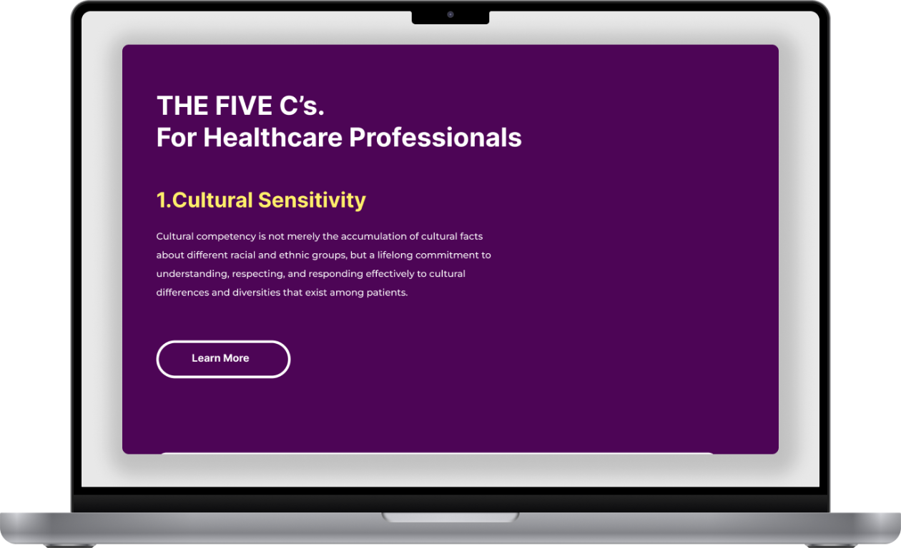
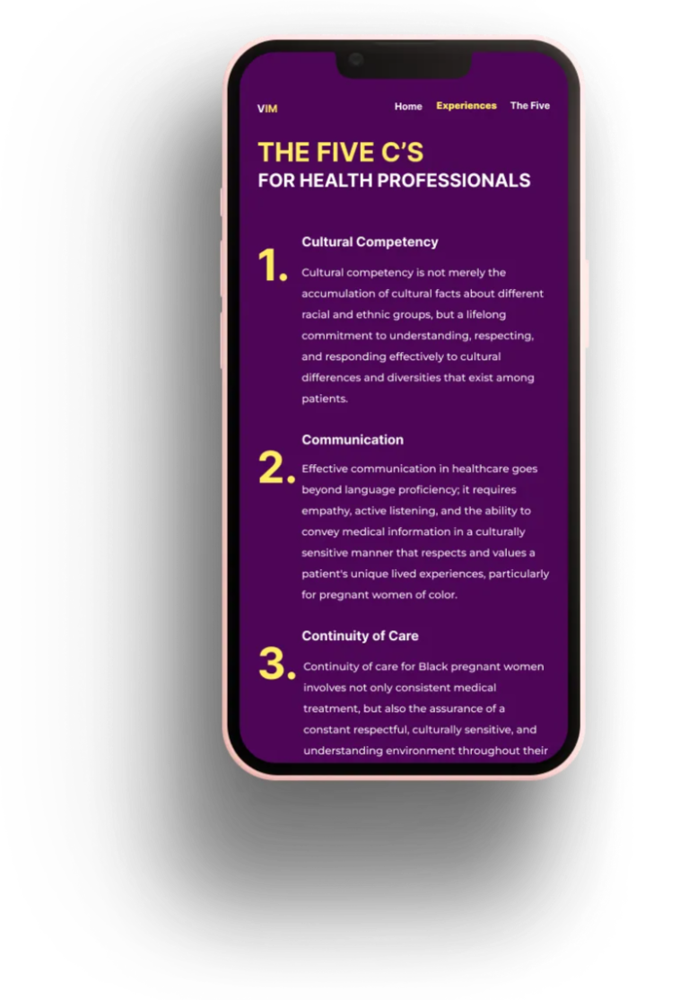
07 · My contribution
My Role
- Led all UX and research work, including trauma-aware methodology
- Conducted interviews with Black mothers and midwives
- Developed the storytelling experience architecture for both patients and professionals
- Created full user flows, Figma prototypes, and a micro design system
- Wrote the Five C’s and integrated them into the platform logic
- Considered physical / digital integration for system-level change
08 · Principles
What I Focused On
Consent-first UX
Users define how their voice is shared.
Emotional safety
Soft visual language, opt-in steps, and clear boundaries.
Systemic design
A product that lives in both tech and institutional space.
Ethical storytelling
Uplifting experience without re-exposing trauma.
09 · What changed
Outcomes
- Completed a full prototype and UX narrative for final-year distinction
- Received strong feedback from academic panels on concept clarity and cultural depth
- Created a framework that now serves as a model for other reflective, health-centered design work
- Sparked continued interest in inclusive, equity-centered systems design
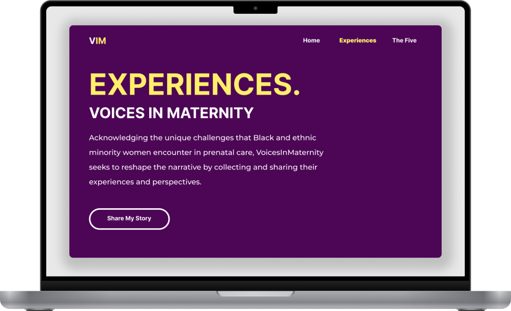
10 · Looking back
What I Learned
- Some of the deepest UX work starts where systems fail emotionally.
- Empowering users means designing with them, not just for them.
- Cultural sensitivity is not an add-on — it must be core infrastructure.
- Design can create accountability without shame, and healing without harm.
This is the end of the project :)
11 · Let’s connect